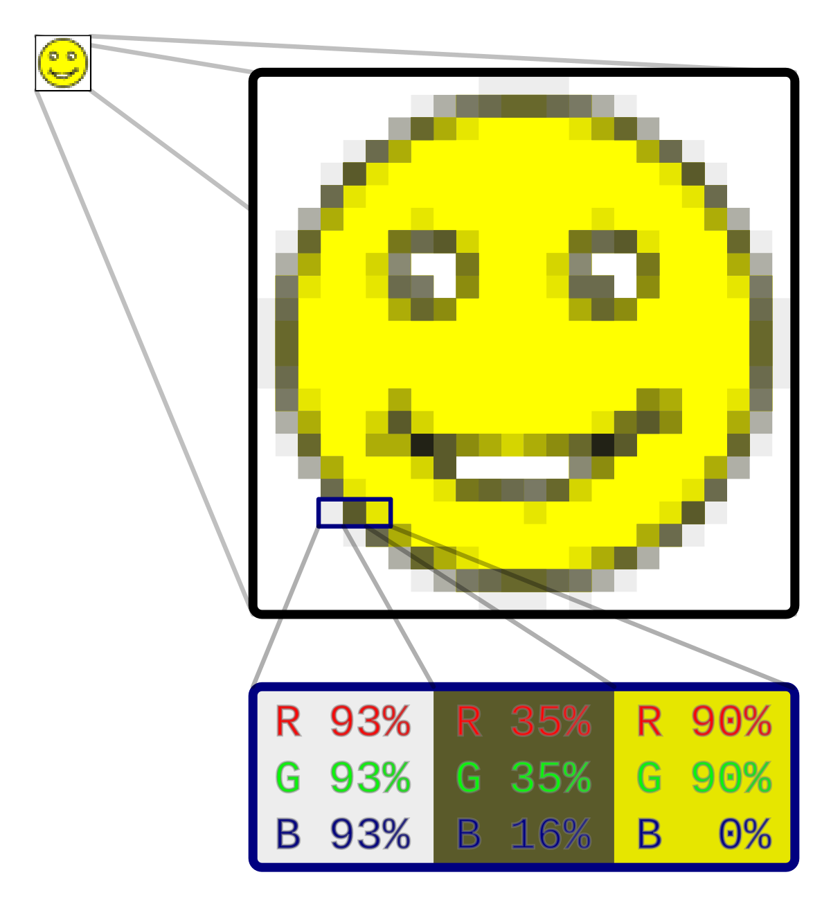

Grafika Rastrowa
Grafika rastrowa to obraz złożony z pikseli, gdzie każdy piksel ma przypisany kolor.
Używana jest głównie w fotografii i na stronach internetowych. Wadą grafiki rastrowej
jest utrata jakości przy powiększaniu, gdy piksele stają się widoczne. Przykładowe formaty to JPEG, PNG i GIF.

Do tworzenia grafiki rastrowej używa się programów takich jak:
Adobe Photoshop
GIMP
Affinity Photo
Krita
Paint.NET